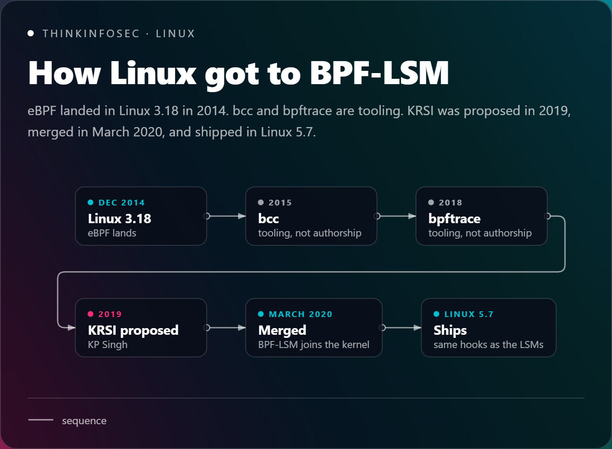
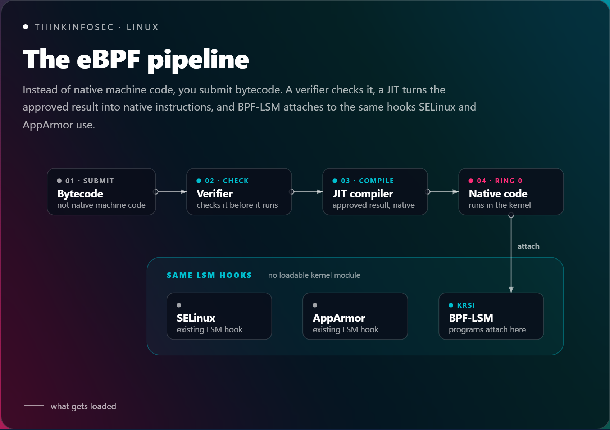
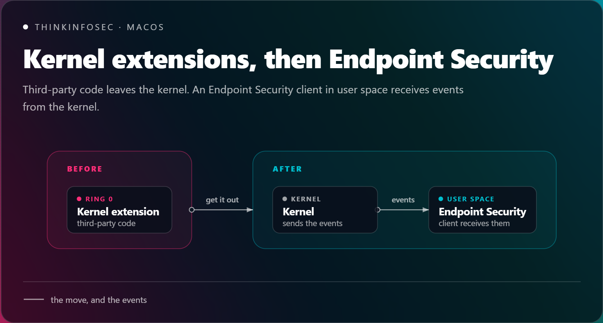
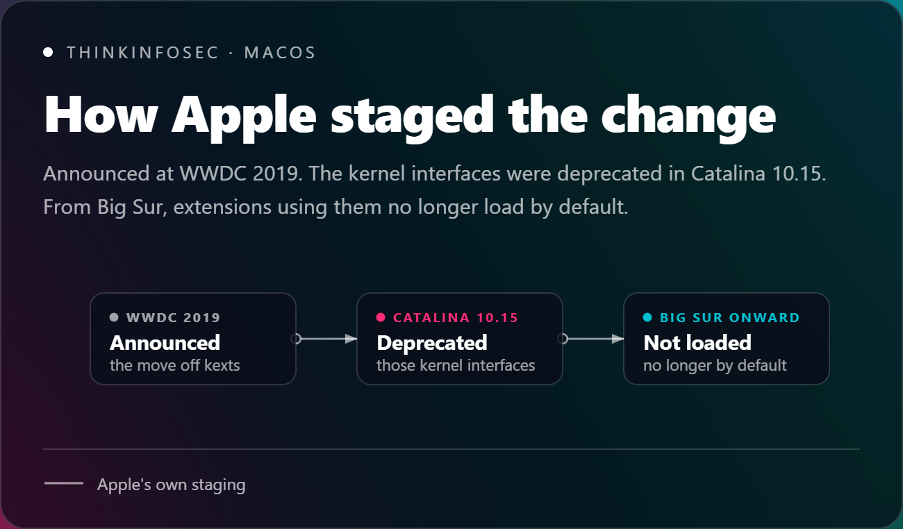
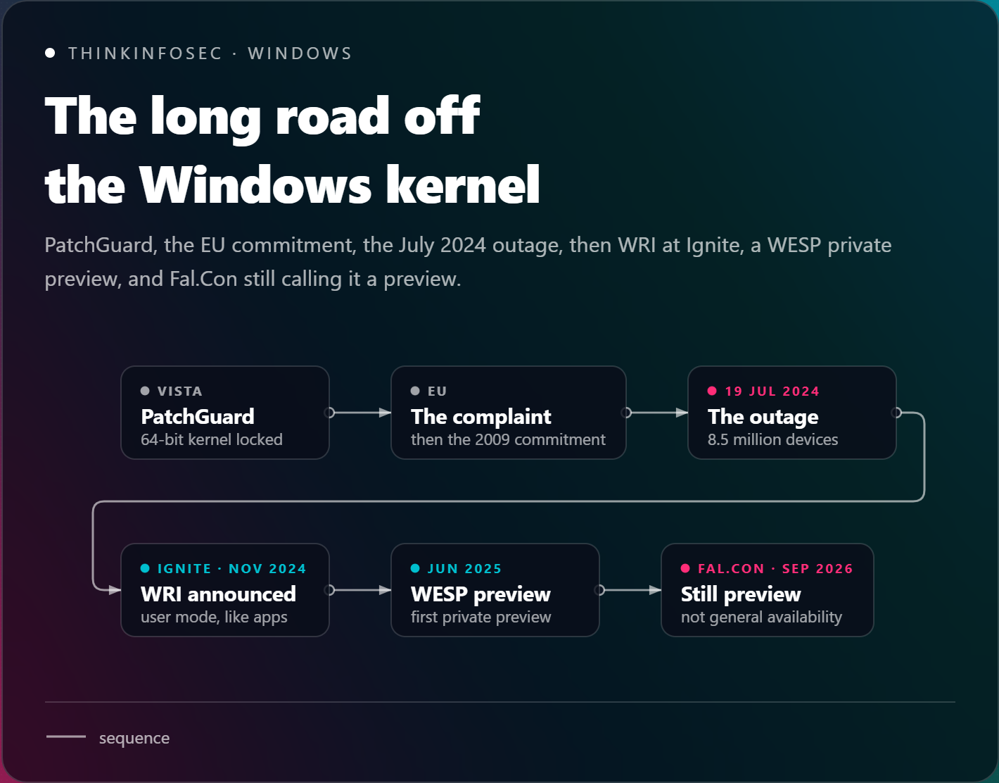
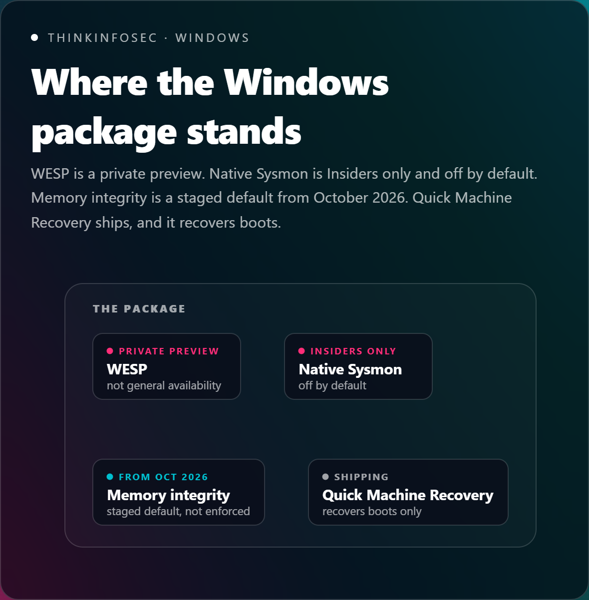
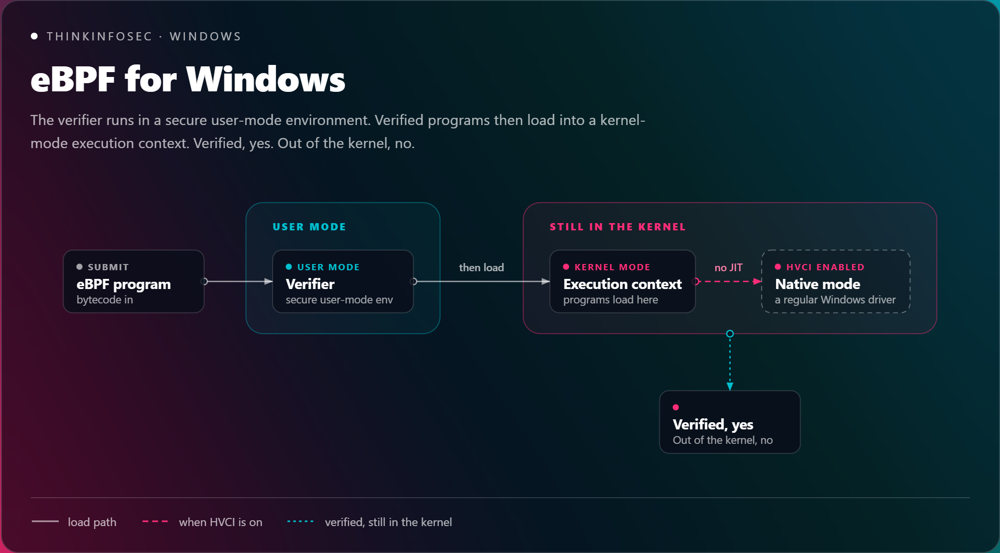
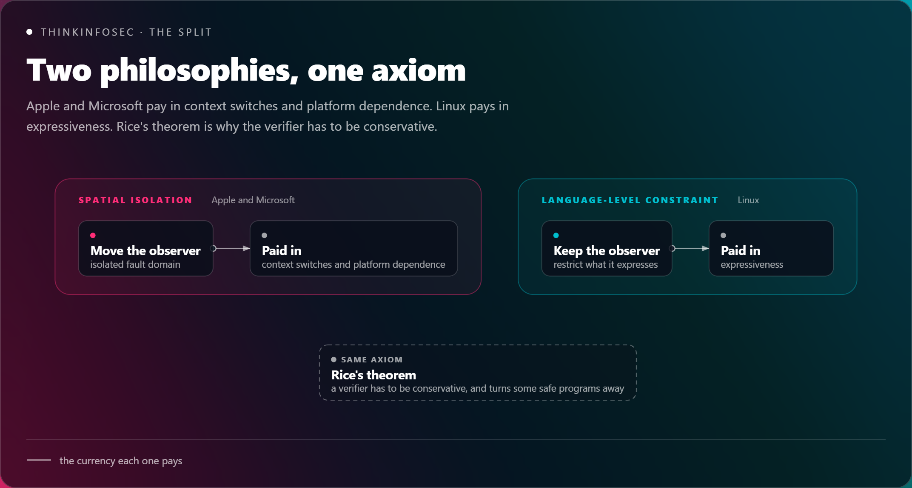

While I was researching for Fal.Con 2026 and watching through the sessions, one caught my attention: the Thursday keynote from Alex Ionescu, CrowdStrike's Chief Technology Innovation Officer (that's the title on CrowdStrike's own keynote page). He's a founding chief architect of the Falcon platform who rejoined CrowdStrike in April 2025, and CrowdStrike's own wrap-up of the event described his slot as the road ahead for the Falcon sensor. Somewhere in that session he briefly compared the user-mode evolution endpoint sensors have been going through across operating systems, and it got me thinking: if Linux, macOS and Windows have all now reached for a user-mode answer, how did each one get there, and how finished is each journey really? That's the question this post tries to answer. (Disclosure up front: I work at CrowdStrike, so weigh everything below accordingly.)
There's a concept in distributed systems called fate sharing — two components share fate when the failure of one takes the other down with it. It's a polite way of describing what we did to endpoints for the better part of two decades: we put the thing meant to protect the machine in the same memory space as the thing that keeps it running.
On 19 July 2024 that arrangement sent the bill. CrowdStrike pushed a sensor configuration update, a logic error in Channel File 291 made Windows fall over, and Microsoft's estimate, as relayed in CISA's alert, put it at 8.5 million Windows devices. That's under one percent of all Windows machines, and still enough to ground airlines and stall hospitals. (I'll stick to primary sources where I can and flag where it's my read.)
Here's a detail worth having a look at, because it sharpens the whole argument. In CrowdStrike's own technical update (republished by Intelligent CIO), the company points out that channel files carry a .sys extension but aren't kernel drivers. They're content. A content file crashed a kernel-resident component, which is exactly the coupling fate sharing warns about.
Long story short, the last fifteen years of operating system design have been a systematic removal of third-party code from Ring 0 — and Linux, macOS and Windows each landed on a different answer. Let's get into it then. One warning up front: the Windows leg of this journey is further from finished than a lot of the commentary suggests, and I'll show you where.
Linux
Linux and eBPF
Linux went first, and it chose the cleverest route: keep the code in the kernel, but change what the code is allowed to be. According to the eBPF entry on Wikipedia, the original authors were Alexei Starovoitov and Daniel Borkmann, and it landed in Linux 3.18 in 2014 (a December 2014 release, if you like your dates precise). Brendan Gregg gets plenty of credit for what came next — bcc in 2015, bpftrace in 2018 — but that's tooling and evangelism, not authorship, and it's a distinction I've seen blurred in more than one conference deck.

The mechanism, as I understand it, is that instead of loading native machine code into Ring 0, you submit bytecode. A verifier checks it before it runs, and a JIT compiler turns the approved result into native instructions. The security payoff arrived with BPF-LSM, also known as KRSI (Kernel Runtime Security Instrumentation). KP Singh proposed it in 2019, per the ISSA Journal's write-up, and it merged in March 2020 and shipped in the 5.7 kernel, letting you attach eBPF programs to the same hooks SELinux and AppArmor use. That's how tools like Cilium, Tetragon and Falco do inline enforcement without a loadable kernel module (LKM) to crash the host.

macOS
macOS and Endpoint Security
Apple took the opposite bet: if third-party code is the problem, get it out. Apple announced the move at WWDC 2019, and Apple's own developer page shows the staging — the relevant kernel interfaces were deprecated in Catalina 10.15, and from Big Sur onward kernel extensions using those deprecated interfaces no longer load by default. The replacement is the Endpoint Security framework, with third-party code running in user space and getting events from the kernel. On Apple silicon it goes further. As Eclectic Light's walkthrough puts it, the default Full Security mode loads only Apple's own kernel extensions, and you have to drop to Reduced Security from Recovery to allow third-party ones.


There's a price, and it's worth naming. As Eclectic Light notes, if a security developer wants access to events that Endpoint Security doesn't expose, they have to ask Apple to add them. My read: that's the real trade of the move to user space. You buy stability by making the platform owner the gatekeeper of what you can see. (One more caveat for transparency — I haven't re-verified Apple's AUTH-event timeout behaviour for this post, so I'm leaving the detail out rather than quoting it from memory.)
Windows
PatchGuard, the EU commitment, WRI and WESP
Windows had the hardest road, partly because of history. When Microsoft locked down the 64-bit kernel with PatchGuard for Vista, security vendors complained to the European Commission. In Brad Smith's announcement, Microsoft said it would keep PatchGuard but extend new kernel-level APIs so vendors could still do their jobs. A 2009 interoperability commitment then required Microsoft to document the APIs its own security products call and make them available to third parties.
After the outage, Microsoft pointed at that commitment as part of the explanation. The Register's reading is that nothing in the undertaking would have stopped Microsoft building an out-of-kernel API for vendors to use. I agree, and it's my read as much as theirs: regulators narrowed the options, but the alternative still had to be built, and for years nobody built it.
That changed with the Windows Resiliency Initiative (WRI), announced at Ignite in November 2024. The goal, per Microsoft's Windows blog, is for security products like antivirus to run in user mode just as apps do. The vehicle is the Windows endpoint security platform (WESP), and Microsoft's November 2025 update says the first private preview shipped in June 2025.
Now the bit that circulates wrongly. A lot of recent commentary treats WESP as already rolled out. It isn't. At Fal.Con in September, CrowdStrike's Alex Ionescu described it as still in private preview and expected to reach general availability soon, per the keynote coverage on Investing.com. That's CrowdStrike's own account, so take it with the usual vendor discount, but it matches Microsoft's own tense, and I couldn't find any Microsoft statement of general availability. Ionescu also framed WESP as the third big OS evolution after eBPF and Endpoint Security. That framing is the company's; I think it's a fair one, but it's theirs.

The same caution applies to the rest of the Windows package. Native Sysmon was announced at Ignite 2025 and, per BleepingComputer, it's only rolling out to Insiders on the Beta and Dev channels and is disabled by default. Memory integrity is moving faster: per Help Net Security, quality updates starting October 2026 begin enabling it on eligible devices (and VBS too where needed), after a readiness check, and machines where it was already switched off are left alone. So it's a staged default, not enforcement. Quick Machine Recovery is real and shipping — per Microsoft Support, it applies remediations through Windows Update from the recovery environment after boot failures — but it recovers boots, it doesn't stop an agent from taking the kernel down in the first place.

One more correction, because I've seen it repeated. eBPF for Windows isn't the user-mode escape hatch the story sometimes implies. The project's README says the verifier runs in a secure user-mode environment, but verified programs then load into a kernel-mode execution context, and with HVCI enabled they can't be JIT-compiled and have to run in native mode, compiled into regular Windows drivers. Verified, yes. Out of the kernel, no.

The split
Two philosophies
Step back and the three platforms split into two philosophies. Apple and Microsoft chose spatial isolation: move the observer into an isolated fault domain in user space, and accept the cost of crossing the boundary. Linux chose language-level constraint: keep the observer in the kernel, but restrict what it can express so a verifier can reject anything dangerous. Same axiom, different currency — one pays in context switches and platform dependence, the other in expressiveness. (This is Rice's theorem showing up in practice: no checker can decide every interesting property of arbitrary programs, so a verifier has to be conservative and will turn away some programs that were actually safe.)

Kernel path, user-mode path, and maturity. Drawn from the account above.
| Kernel path | User-mode path | Maturity | |
|---|---|---|---|
| Linux | Bytecode through a verifier and a JIT, then native code in the kernel. BPF-LSM on the same hooks as SELinux and AppArmor. | The observer stays in the kernel. The limit is what the program can express. | Shipped. Linux 3.18 in 2014. BPF-LSM in 5.7. |
| macOS | Deprecated kernel-extension interfaces no longer load by default from Big Sur. Full Security on Apple silicon loads only Apple's own extensions. | An Endpoint Security client in user space receives events from the kernel. | Shipped. What you can see is the events Apple exposes. |
| Windows | eBPF for Windows verifies in user mode, then loads programs into a kernel-mode execution context. With HVCI, they run as regular Windows drivers. | WESP, so security products run in user mode the way apps do. | WESP is still a private preview. Native Sysmon is Insiders only and off by default. Memory integrity is a staged default from October 2026. Quick Machine Recovery ships, and recovers boots. |
My read, and it's only that: the verifier is still software, and software has bugs, so 'mathematically safe' is a goal rather than a guarantee. And whether user-space enforcement hits a hard latency wall in high-throughput environments (trading systems, database I/O, AI training clusters) is, as far as I can tell, an open question rather than a settled one. I haven't seen independent benchmarks that settle it, and I'd treat anyone who claims otherwise, vendors included, with the standard discount rate.
There's also a second-order effect worth watching. As Ring 0 gets locked down by HVCI, SIP and verifiers, attention moves below it — hypervisor, firmware, baseboard management controllers. The lessons of this decade (isolate the observer, constrain its power, make failure recoverable) apply there too, and nobody has had their July 2024 moment yet.
What to do
On Monday
So what do you do with this on Monday? Three things. First, check where memory integrity stands across your Windows fleet before the October quality updates land, because as Help Net Security points out, posture can now shift between patch cycles without anyone raising a change request, and incompatible drivers are the likely casualty. Second, ask your endpoint vendor for its WESP position in writing, in Microsoft's language: private preview versus general availability is the line that matters. Third, on Linux estates, find out whether your sensor is running as a kernel module or on eBPF, because that single answer tells you a lot about its blast radius when something goes wrong.
Learn more about my Cloud and Security Projects: ThinkInfoSec Hub · YouTube · Podcast
Thank you for reading and leave your thoughts/comments!